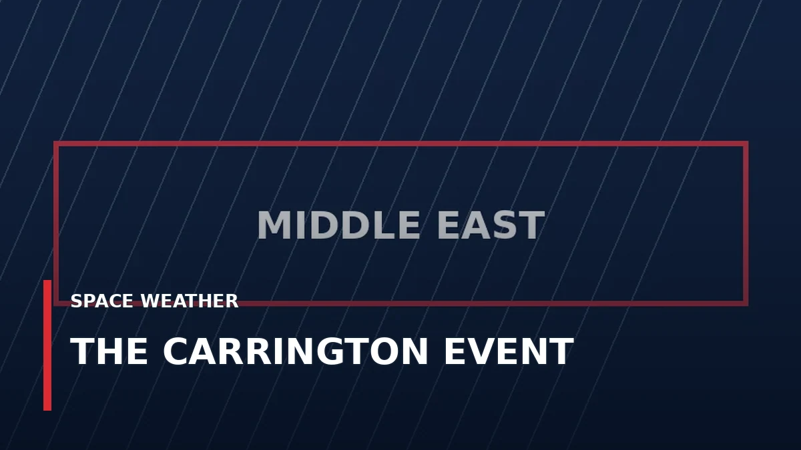

The Solar Storm That Set Telegraph Equipment Sparking: What Was the Carrington Event?

In 1859, a powerful disturbance from the Sun produced spectacular auroras and disrupted the communications technology of its day. What could a similar event mean now?
WATCH TEXAS NEWS STUDIO LIVE →
A remarkable September in 1859
On September 1, 1859, British astronomer Richard Carrington observed an intense flash of light on the Sun. Around that period, Earth experienced an exceptionally powerful geomagnetic storm. Auroras appeared far beyond their usual high-latitude regions, and telegraph operators reported disruptions, sparks and equipment problems.
Those reports are extraordinary because telegraph networks were among the most advanced electrical communications systems of the time. The event became known as the Carrington Event.
How can a storm on the Sun affect Earth?
The Sun sometimes releases enormous clouds of magnetized plasma called coronal mass ejections. When one interacts strongly with Earth's magnetic environment, it can cause a geomagnetic storm. Rapid changes in Earth's magnetic field can induce currents in long conductors, including power transmission systems.
The colorful auroras are a visible reminder of the energy involved, but the practical consequences can reach far beyond the night sky.
What would happen if it occurred today?
Modern society depends on electrical grids, satellites, radio communication and satellite-based navigation. A severe geomagnetic storm could disrupt some of these systems, although the exact consequences would depend on the storm, infrastructure protections, and operational responses. It would not mean that every electronic device on Earth suddenly fails.
Power-grid operators, satellite operators and space-weather forecasters monitor these risks. NOAA's Space Weather Prediction Center issues watches, warnings and alerts to help affected industries prepare.
Could we see another one?
Severe solar storms remain possible. Scientists cannot predict the exact date of the next Carrington-scale event, but solar observations and space-weather forecasts can provide warning of developing activity.
The lasting lesson of 1859 isn't that catastrophe is inevitable. It's that activity roughly 93 million miles away can have consequences for technology on Earth.
Follow the Sun today
Explore current solar conditions in our Space Weather section, and visit our always-on broadcast for news, weather and major developments.
NOAA Space Weather Prediction Center: Geomagnetic Storms
Historical explainer; this is not a report of a current solar storm. Published October 21, 2026.